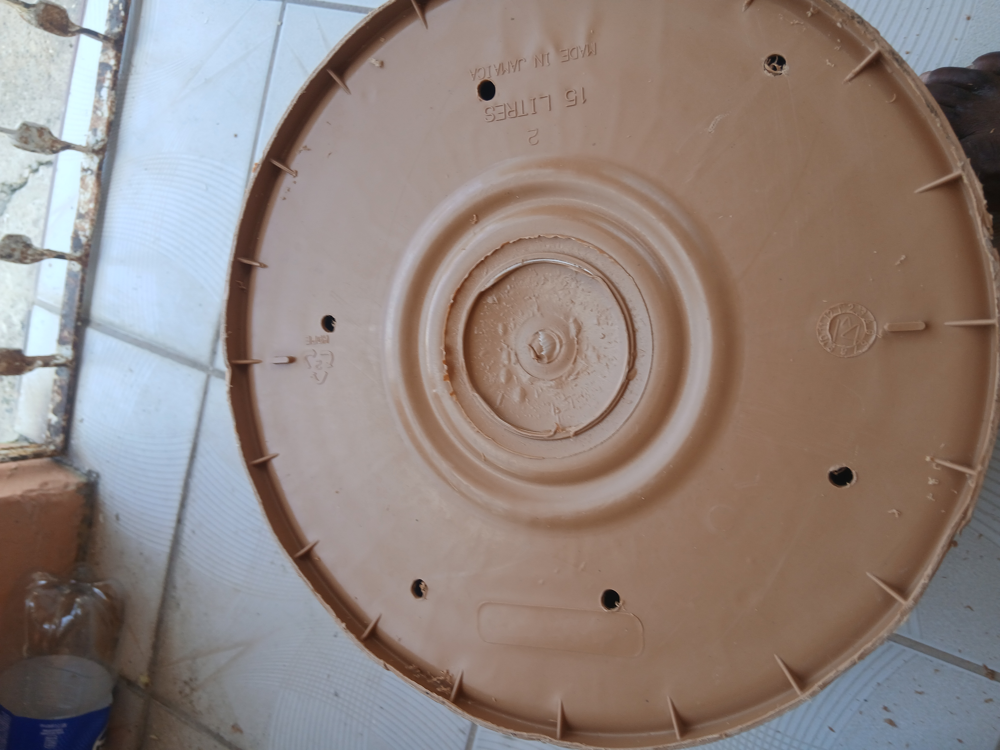
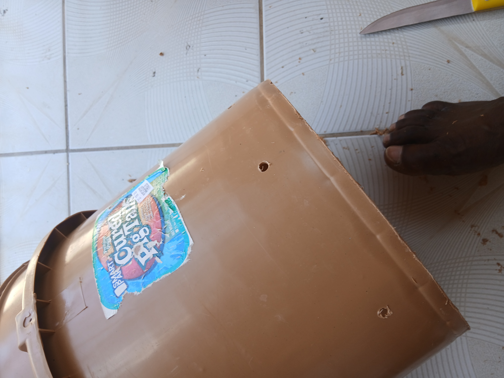

🌿 Container Gardening: A Journey of Trial, Error, Success, and Growth
Container gardening has taught me a lot over time. Some plants grew better than expected, some struggled, and others eventually outgrew the containers they started in. Through trial and error, I began learning how important things like drainage, soil quality, sunlight, and container size really are.
One thing I’ve learned is that you don’t need expensive pots or a large amount of land to start gardening. Many of the plants in my yard started in recycled bottles, buckets, and reused containers. Sometimes you simply have to start with what you already have available and improve along the way.
🌿 Starting Small With Recycled Containers
One of the things I enjoy most about container gardening is finding ways to reuse everyday items around the yard. Many of my plants started in simple recycled containers before eventually being moved into larger pots.


These containers may not look fancy, but they can still work very well for starting plants once they are prepared properly.
🌿 Preparing Containers Properly
One of the most important lessons I learned was the importance of drainage. Without proper drainage holes, water can build up inside the container and damage the roots.



🌿 Learning That Container Size Matters
As plants grow, their roots also need more room. One of the biggest lessons I learned is that some containers work well temporarily, but eventually the plant may need a larger home.


After moving some of my citrus plants into larger containers with better soil, I started noticing healthier growth and stronger leaves.
🌿 Plants That Thrive in Containers
Some plants seem to adapt very well to container gardening. Fever grass, also called lemon grass, is one of the easiest and most useful plants I’ve grown in containers.

A lot of ornamental plants also grow surprisingly well in reused containers once they receive enough sunlight, water, and drainage.
🌿 Some Plants Need More Space
Not every plant responds the same way to container gardening. Some crops eventually need deeper soil or more room for proper root development.

After noticing tubers forming, I decided the potato plant would likely do better in the raised bed.


The tomato plant is another example that taught me an important lesson about container depth.

Gardening has taught me that observing the plant carefully is often the best teacher.
🌿 Gardening During Recovery
Over the past months, gardening has also helped me personally while recovering from my leg injury. Spending time around the plants has helped me stay active, focused, and positive during recovery.

Sometimes gardening is not just about growing plants — it can also help support your own healing journey.
🌿 Final Thoughts
Container gardening is a learning experience. Some plants will thrive, some will struggle, and mistakes will happen along the way. But every mistake teaches something valuable.
You do not need expensive pots or a large backyard to begin gardening. Start small, use what you already have available, and improve little by little as you learn.
The important thing is simply to start.
🌿 Gardening Tools & Supplies
If you're interested in some of the gardening tools, seeds, and supplies I use or recommend for container gardening, check out my Amazon storefront below.
As an Amazon Associate I earn from qualifying purchases.
© Gardening With Kev – Container gardening notes from my own home garden.